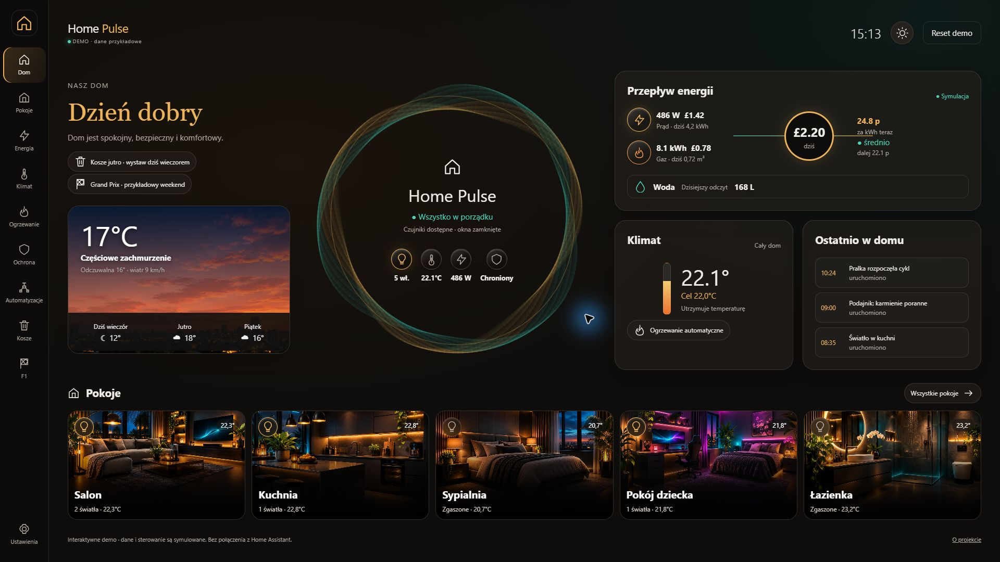

Pokoje i komfort
Fotograficzne kafelki, szklana nawigacja, światła, termostaty i klimatyzacja. Najważniejsze informacje bez szukania encji.
Projekt dla Home Assistant · w rozwoju
Pokoje, temperatura, energia i codzienne sprawy domu. Home Pulse łączy je w dashboard, który możesz dopasować do swojego stylu.

Wejdź do przykładowego domu ↗Więcej niż lista encji
Ekran Dom zbiera najważniejsze informacje przy animowanym pierścieniu. Zdjęcia prowadzą do pokoi, a w pokoju znajdziesz światła, temperaturę i wybrane urządzenia.
Osobne widoki porządkują energię, klimat, ogrzewanie i ochronę. Są też codzienne drobiazgi: historia automatyzacji, termin wystawienia koszy oraz weekend wyścigowy.
Fotograficzne kafelki, szklana nawigacja, światła, termostaty i klimatyzacja. Najważniejsze informacje bez szukania encji.
Prąd, gaz i woda, koszt dnia, temperatury pokoi oraz wizualizacja kotła. Dane zebrane w czytelnym układzie.
Jasny i ciemny motyw, zdjęcia lub ilustracje Cartoon, szklane panele, kolorowa poświata i ograniczenie animacji.
Ochrona, ostatnie uruchomienia automatyzacji, kalendarz koszy i zakładka F1 — zależnie od konfiguracji domu.
Klikaj swobodnie
Demo działa na przykładowych danych. Możesz przełączyć światło, zmienić temperaturę, wygląd czy dodać pokój. Nic nie łączy się z prawdziwym domem. Przycisk „Reset demo” przywraca początek.
To osobna prezentacja oparta na wyglądzie Home Pulse. Nie jest instalatorem HACS ani pełną kopią integracji HA. Harmonogramy, ceny i dane F1 są ilustracyjne.
Otwórz demo →